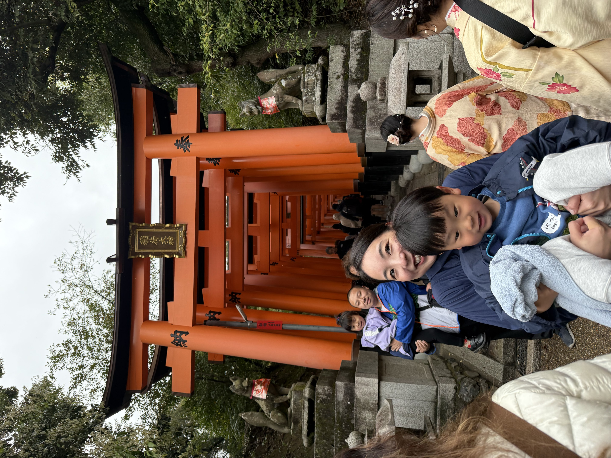
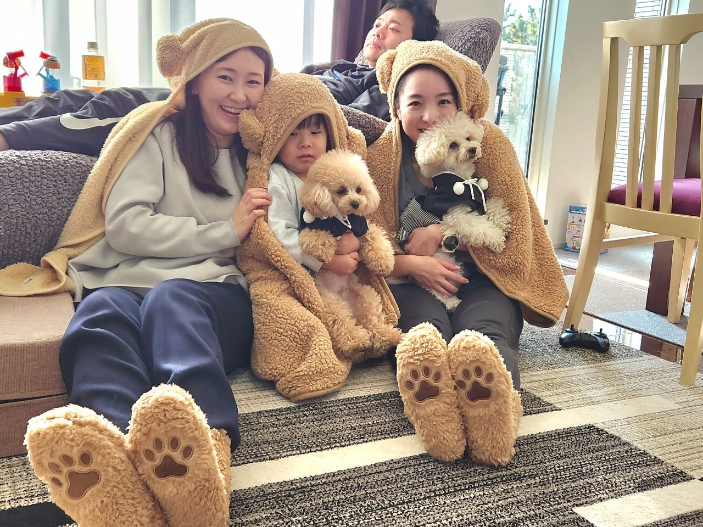
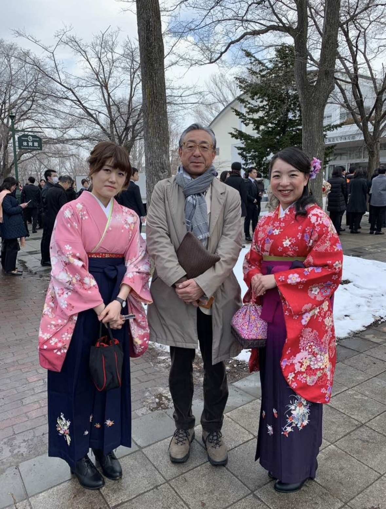

Family

Haru kun
Baby Nao & Yuta

Family

Dinosaur Family

Dake & Ojisan
Dake and Me, The Champions
New Year Family Gathering
SDF Nursing School
Army

Graduation

Shige chan
Aya

Aya & Lisa

Lisa & Manabucchi san
Airi chan
High School

Mao

Kei chan

Hatano
Hokkaido University (MPH)

Hokudai MPH booth

Defence Day

Echigoya san

Kawahara san

Yang kun

Asai san
Hyojung & Andrei & Sungmok
Research Community

Laura

Ito kun & Dokan kun

Omori san

Ejima san
Vancouver

Cake from Kut Family
Bianca san
Elina san

Sangyop

Mana san & Japser

Mana san

Jane

Lina
ASU

Lucero

Yilei
Salman

Mason & Tammy & Jordy R
Yong Chan
NYU

Frey

Kasturi

Neha

さきちゃん

スキューバダイビング
×